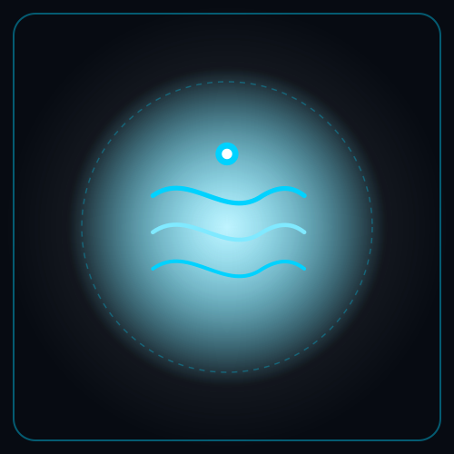
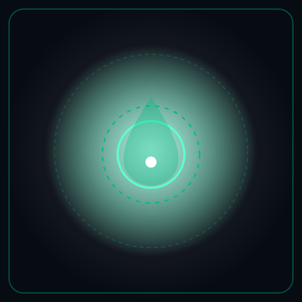
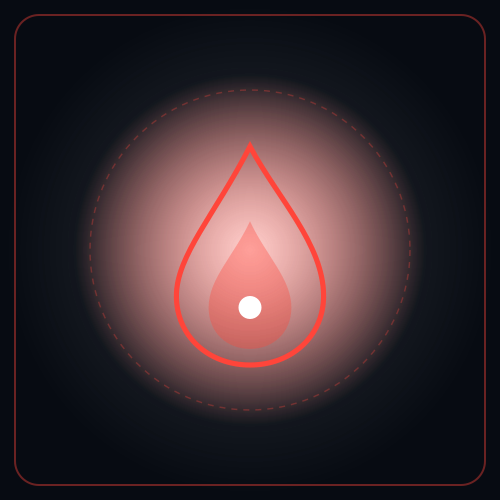
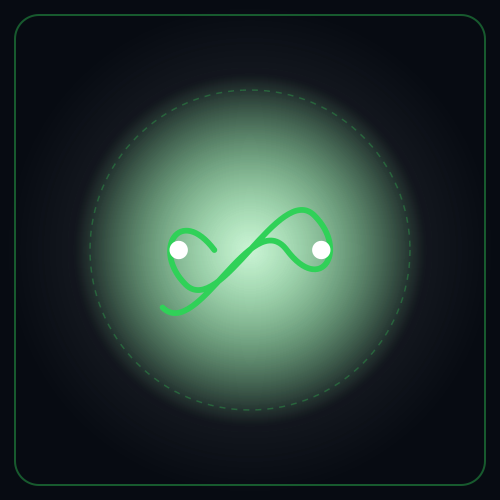
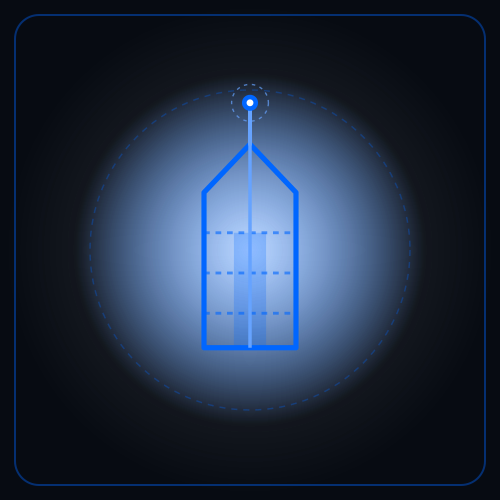
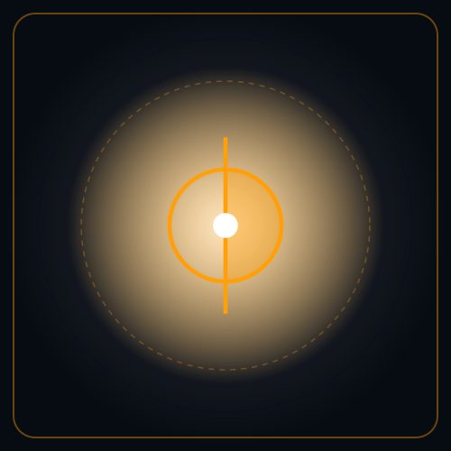
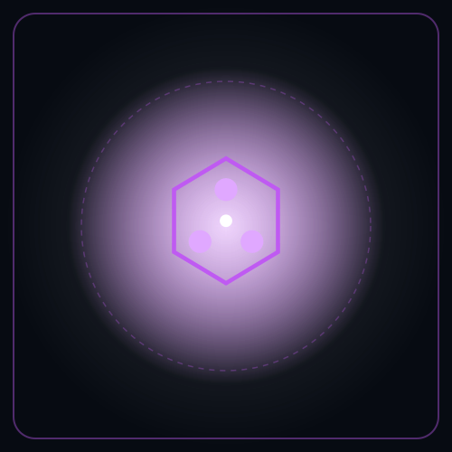

Gemelos Digitales Paramétricos & Modelado Predictivo
Inferencia Física Determinista de Misión Crítica
Replicamos el comportamiento físico del agua, la energía, el fuego y las edificaciones mediante modelos matemáticos avanzados. Nuestros sistemas procesan telemetría y datos oficiales en tiempo real (como radar y estaciones de AEMET) para anticipar catástrofes, vigilar la salud ambiental y optimizar recursos en milisegundos, ofreciendo soporte predictivo exacto conforme a la normativa de la Unión Europea.
Portafolio de Gemelos Digitales Paramétricos
Ecosistema de gemelos paramétricos y modelos deterministas estructurado estrictamente por hitos cronológicos reales. Los cuatro núcleos en producción activa operan en la nube pública con registro oficial CERN/Zenodo (DOI); las siguientes suites se despliegan semanalmente según el calendario oficial de cierre 2026.
Sistemas en Producción Activa & Auditados ● 4 CORES EN LÍNEA & AUDITADOS
Despliegues verificados en Streamlit Cloud, Repositorios Open-Core y Dictámenes con Registro Oficial Zenodo (DOI)
HYDRO-CORE: OSIRIS

Sistema de predicción inmediata de inundaciones torrenciales. Anticipa calados y desbordamientos con hasta 146 minutos de ventaja respecto a modelos clásicos, salvaguardando vidas, cascos urbanos e infraestructuras críticas.
AQUA-CORE: HYGIEIA

Gemelo digital hidrosanitario para hospitales y redes de distribución de agua. Monitorea el decaimiento de desinfectante en tiempo real y erradica el riesgo de Legionella, optimizando purgas y asegurando cumplimiento de SINAC y RD 3/2023.
PYRO-CORE: PROMETHEUS (V1)

Gemelo digital y peritaje forense de incendios forestales. Resuelve la dinámica de frentes de fuego Rothermel acoplada a teledetección espectral dNBR/MIRBI de Sentinel-2 para reconstrucción pericial y defensa territorial.
SOLAR-CORE: HELIOS

Gemelo digital paramétrico para parques fotovoltaicos e hibridación de baterías LFP. Acopla física determinista de Perez/Faiman con red neuronal PINN (11.41M params, R² = 0.9912), evaluación ambiental preventiva (Ley 21/2013) y arbitraje en OMIE/REE.
Cronograma Oficial de Despliegue · Otoño 2026
Salidas escalonadas semana a semana y conmemoración especial de la DANA hasta el cierre del ciclo 2026
Lanzamiento Mayor: HYDRO-CORE OSIRIS V6 Próximo Salto
Asimilación radar Doppler de AEMET en tiempo real y refinamiento de malla hidrodinámica 2D a 5 metros en ramblas y cuencas mediterráneas de respuesta relámpago.
SOLAR-CORE: HELIOS
Desplegado en producción en Streamlit Cloud con registro CERN/Zenodo (10.5281/zenodo.23506041) y repositorio GitHub Open-Core. Cumple 116 normas ISO/IEC, AESA (RD 369/2023) y P.O. de REE.

CIRCULAR-CORE: OUROBOROS
Trazabilidad digital y pesaje de residuos hospitalarios (SERMAS Madrid y CSMC Magdalena) e industriales (RCD Levante) por código LER. Cumple Ley 7/2022, RD 764/2026 MITECO, ISO 59020:2024 y CSRD (ESRS E5).

CYBER-CORE: DAEDALUS
Control ciberfísico para edificios terciarios conforme a ISO 52120-1 Clase A, ISO 50001/50006 y SRI 84% (EPBD). Acopla redes PINN-TCN (1.55M) y Neural-MPC (1.59M) vía BACnet/SC (TLS 1.3), monetizando ahorros en CAE (Ficha TER050).
PYRO-CORE: PROMETHEUS
Peritaje satelital post-incendio con Sentinel-2 a 10 metros. Evalúa severidad del suelo quemado y genera en menos de 24 horas presupuestos oficiales de restauración con tarifas TRAGSA antes de que las lluvias arrastren el terreno.
Pipeline de I+D & Nuevas Suites en Desarrollo EJERCICIOS 2027 – 2028
Proyectos en fase de modelado numérico, validación de laboratorio y transferencia programada

THERMO-CORE: JANUS
Motor determinista (balance_termico_epbd2024.py) de envolvente térmica ZEB en Zona D3: U_muro = 0.22 W/m²K, Blower Door n₅₀ = 0.85 h⁻¹ y C_ep,nren = 18.5 kWh/m²·año (Clase A).

TOX-CORE: TALOS
Motor determinista de pluma gaussiana lineal (Enlace Veriña / El Musel Gijón BOE-A-2026-21156) y Análisis Cuantitativo de Riesgos en suelos (HQ ≤ 1.0, ILCR ≤ 10⁻⁵).
BIO-CORE: PHOENIX
Gemelo de rebrote biótico acoplado a PROMETHEUS para planificación forestal resiliente y captura de carbono.

URBAN-CORE: THEMIS
Dimensionamiento de pantallas acústicas (4.5 m, ΔL_z = -11.4 dBA en Acceso El Musel GJ-10) y auditoría de dosel arbóreo (UTC 11.6% ≥ 10%, LST -2.5 °C).
AERO-CORE: AEOLUS
Dinámica de fluidos computacional (CFD) para evitar embolsamientos tóxicos en cañones urbanos estrechos.
GEO-CORE: GAIA
Monitorización satelital milimétrica para prevención de desprendimientos en taludes de carreteras, presas y desmontes.
PURIF-CORE: NEREUS
Modelado físico de membranas y ósmosis inversa para reciclaje de vertidos industriales complejos en ciclo cerrado.
SONO-CORE: ECHO
Cálculo de propagación de ruido exterior para ubicación óptima de pantallas fonoabsorbentes en infraestructuras viarias.
EPIDEM-CORE: ASCLEPIUS
Rastreo genómico de patógenos virales y bacterianos en alcantarillado urbano para anticipar picos epidémicos.
AGRO-CORE: CERES
Balance de nitrógeno, balance hídrico y teledetección de coberturas agrícolas para justificación de ayudas de la UE.
Consola Operativa de Gemelos Digitales Paramétricos
Prueba los gemelos en producción interactuando con los modelos matemáticos y telemetría de campo directamente dentro del portal.
Matriz de Rendimiento: Paradigma Convencional vs. Yggdrasil OS
Comparativa de desempeño entre metodologías tradicionales de ingeniería civil/ambiental y nuestros gemelos digitales de Caja Gris (ecuaciones físico-matemáticas exactas aceleradas por operadores neuronales).
OSIRIS FNO vs. HEC-RAS / Iber
- • Latencia: 4.2 horas de cómputo por escenario de lluvia.
- • Operativa: Aviso en diferido tras el pico de avenida; en cuencas rápidas (Tc < 2 h) la riada llega antes que el cálculo.
- • Incertidumbre: Inviable correr ensambles estocásticos en vivo.
- • Latencia: 38.4 ms de inferencia continua GPU/CPU.
- • Operativa: 146 min de anticipación crítica para evacuación y protección civil.
- • Incertidumbre: 100.000 miembros Monte Carlo para mapas de riesgo probabilístico.
HYGIEIA vs. Analítica Manual
- • Frecuencia: Muestreo puntual manual cada 15 a 30 días en grifos centinela.
- • Cultivo: 10 a 14 días de incubación en placa para confirmar Legionella.
- • Vulnerabilidad: Durante 14 días el hospital opera a ciegas ante caídas de cloro libre.
- • Frecuencia: Simulación cinética cada 60 s en todos los anillos y retornos ACS.
- • Alerta: Inmediata (< 1 s) ante caída de desinfectante (< 0.2 mg/L).
- • Ahorro & Ley: -64.3% de agua purgada y trazabilidad SINAC v3 (RD 3/2023).
PROMETHEUS vs. Campo Analógico
- • Plazos: 60 a 90 días de trabajo de campo con cuadrillas y GPS para perímetro.
- • Erosión: Estimación empírica sin discretización píxel a píxel de pendiente LiDAR.
- • Licitación: Semanas de redacción manual de pliegos, llegando tarde a lluvias otoñales.
- • Plazos: < 48 h post-ignición con ráster multiespectral Sentinel-2.
- • Erosión: Ecuación física RUSLE con MDE 5 m (48.2 t/ha·año en Niebla).
- • Licitación: Presupuesto automático con tarifas oficiales TRAGSA (4,73 M€).
DAEDALUS BACS vs. BMS Clásico
- • Control: Relojes horarios estáticos y consignas fijas sin inercia térmica.
- • Eficiencia: Derroche del 25% al 35% climatizando zonas sin ocupación.
- • Financiero: Imposible certificar ahorros ante el MITECO para cobrar CAEs.
- • Control: Modulación multivariable BACnet/SC & Modbus RTU (RITE / ASHRAE 55).
- • Eficiencia: -28.4% de consumo energético auditado (148.6 MWh/año).
- • Financiero: Liquidación directa de Certificados CAE (RD 36/2023).
Calculadora Ejecutiva de Impacto Operativo & Retorno de Inversión (ROI)
Selecciona la tipología de tu activo y cuantifica en segundos el ahorro operativo directo, pasivos sancionadores mitigados y plazo de retorno económico.
Impacto Ambiental & ESG: Reducción estimada de 1.890 m³ de agua de purga y mitigación del 99.4% del riesgo de proliferación de biopelícula en redes sanitarias.
Misión, Visión, Valores & Compromiso Social
Los pilares epistemológicos, éticos y de servicio público que rigen la arquitectura computacional de Yggdrasil Environmental Systems.
Nuestra Misión
Diseñar, modelar y desplegar gemelos digitales paramétricos deterministas de alta fidelidad biofísica que anticipen catástrofes climáticas, vigilen la salud pública hidrosanitaria y optimicen infraestructuras críticas en tiempo real. Unir el rigor analítico de la ingeniería europea con aceleración neuronal de frontera, protegiendo vidas humanas y activos territoriales sin margen para el error.
Nuestra Visión
Consolidar a Yggdrasil como el estándar europeo de referencia en gemelos paramétricos e inteligencia ambiental auditable. Demostrar al mundo que los sistemas críticos no pueden depender de 'cajas negras' probabilísticas ni de IA no supervisada, consolidando un ecosistema donde la computación respeta las leyes de la física y cada decisión está custodiada bajo supervisión humana experta (Human-in-the-Loop).
Valores Fundamentales
Compromiso Público
Ponemos la computación planetaria de frontera y la teledetección satelital al servicio de la defensa civil y la resiliencia ciudadana. La tecnología más avanzada debe proteger a las poblaciones vulnerables antes de que llegue la riada, erradicar patógenos del agua de consumo hospitalario y blindar la viabilidad económica de las infraestructuras, garantizando un pacto intergeneracional de respeto absoluto a las leyes de la naturaleza.
La Física y la Matemática Mandan; la Inteligencia Artificial es el Acelerador
A diferencia de las IAs generativas o de "Caja Negra" que operan por aproximación estadística ciega, Yggdrasil es una arquitectura de Caja Gris: el núcleo soberano está gobernado por las ecuaciones clásicas de conservación de masa, energía y momento (Saint-Venant 2D, Navier-Stokes, cinética de EPANET, transposición de Perez/Faiman, ecuación RUSLE y fluencia de Arrhenius). La Inteligencia Artificial (Operadores Neuronales FNO y redes PINN) actúa exclusivamente como un acelerador matemático en GPU (< 38.4 ms) sometido a un Centinela Físico. Si la IA se apaga, el motor analítico clásico sigue resolviendo con exactitud determinista.
Doctrina Tecnológica & Gobernanza
Los fundamentos metodológicos inviolables que rigen cada modelo, cálculo técnico y algoritmo del ecosistema Yggdrasil.
«Jamás le vamos a poder ganar a la naturaleza, ni a la biología humana; quien no entienda esto, jamás podrá vivir.»
Los modelos matemáticos, la teledetección y la inteligencia artificial no existen para subyugar a la biosfera ni forzar los límites biológicos del ser humano, sino para comprender sus leyes biofísicas inmutables y proteger la vida.
Primacía Física (Doctrina Caja Gris)
La física y la matemática mandan (Saint-Venant, Navier-Stokes, Perez/Faiman, Arrhenius). La IA opera únicamente como acelerador cinético en GPU (<38.4 ms) acotado por leyes de conservación inviolables (cero alucinaciones).
Custodia Probatoria & Integridad
Todo desarrollo y reporte técnico se sella criptográficamente mediante hash SHA-256 e interoperabilidad ISO/IEC 27037. Se mantiene pista de auditoría inmutable de cada inferencia conforme al Art. 12 del EU AI Act.
Supervisión Humana Obligatoria (HITL)
Los sistemas operan como soporte a la decisión (DSS). Conforme al Art. 14 del Reglamento (UE) 2024/1689 (EU AI Act), la decisión crítica y la firma técnica pertenecen al facultativo competente (MECES 3 / EQF 7).
Marco de Conformidad Técnica: Taxonomía ISO 23247 & EU AI Act
Las suites operan como modelos paramétricos basados en física e ingestión unidireccional de telemetría abierta (AEMET OpenData, OMIE, Copernicus, SINAC). Realizan asimilación de datos, diagnóstico pericial y cálculo de mancha de inundación 2D en 38.4 ms sin depender de sensores cautivos in situ ni alterar contratos de hardware.
Los sistemas actúan estrictamente como plataformas de soporte a la decisión (DSS) con supervisión humana cualificada (Human-in-the-Loop, Art. 14 EU AI Act). No asumen control mecánico ni órdenes autónomas sobre infraestructuras críticas (presas, compuertas o subestaciones), garantizando total blindaje de responsabilidad pericial.
Blindaje Legal, Certificaciones & Registros DOI
Cada desarrollo cuenta con prioridad científica inmutable a través de Zenodo / CERN y trazabilidad forense para tribunales y auditorías.
Registros DOI (CERN / Zenodo)
Publicaciones técnicas formales con identificador de objeto digital emitido bajo la infraestructura de ciencia abierta europea:
Auditoría EU AI Act
Cumplimiento riguroso de los Artículos 12 (Registro automático de eventos) y 14 (Supervisión humana). Barandillas físicas invariantes que impiden la violación de normativas técnicas.
Conformidad Normativa
Sellos y marcos de compatibilidad legal aplicados a cada entregable técnico y dictamen pericial:
Contacto Directo de Dirección
Para consultas de licitaciones públicas, despliegues de gemelos paramétricos y sombras digitales en cuenca o edificios, auditorías hidrosanitarias o dictámenes de ingeniería ambiental, contacta directamente con la dirección técnica.